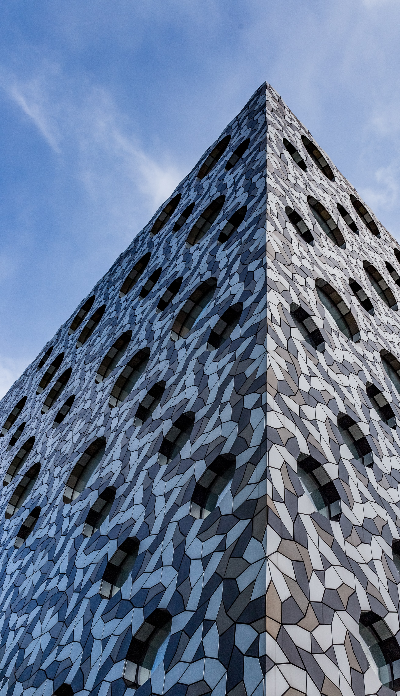

News that lasts.
About
Schwartz Media publishes intelligent news and current affairs that breaks the 24-hour news cycle. We
offer a nuanced examination of Australia and the world, focused on fresh insight and literary
expression. Our audience reads to know, not just to agree. We invest in long-form journalism where
the issues demand it, providing writing of a quality that makes difficult topics clear. Schwartz
Media publishes Australia’s most respected writers across The Saturday Paper, The Monthly magazine
and the daily podcast 7am, alongside our sister publications, Quarterly Essay and Australian Foreign
Affairs.
View our companies
Journalism
Our journalists create in-depth, independent, original public interest reporting, focusing on storytelling and insight.

The Monthly
The Monthly publishes long-form journalism from the nation's leading writers and thinkers, covering Australian politics, culture and ideas.
Quarterly Essay
Quarterly Essay is the leading agenda-setting journal of politics and culture in Australia.
Australian Foreign Affairs